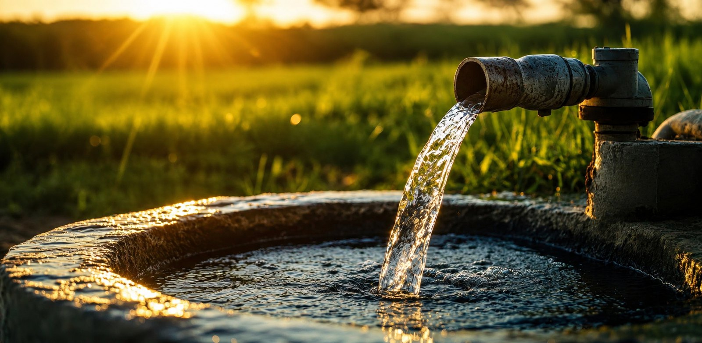

A bomba parou ou queimou
Aquele silêncio na torneira. Na maioria das vezes é a bomba que chegou no fim ou teve problema elétrico. A gente identifica e troca com peça original.

Bomba queimada, água fraca, água suja ou poço que parou de puxar: a DJA faz a manutenção completa do seu poço artesiano com equipamento próprio, peça original e garantia. Atendemos Curitiba e região num raio de até 300 km, inclusive chácaras e sítios.
Poço não avisa quando vai falhar, e quando falha é aquele aperto. Se você está passando por algum desses, a DJA resolve:
Aquele silêncio na torneira. Na maioria das vezes é a bomba que chegou no fim ou teve problema elétrico. A gente identifica e troca com peça original.
Chuveiro pingando, caixa que não enche. Pode ser a bomba perdendo força, tubulação comprometida ou o próprio poço pedindo limpeza. A gente descobre a causa certa.
Água com ferro mancha roupa, louça e piso. Instalamos filtro e sistema de tratamento (desferrização) pra sua água voltar a sair limpa.
Do nada a água sumiu. Fazemos a inspeção completa, recuperação do poço e teste de vazão pra devolver a produção.
Bomba desarmando ou motor forçando pesa no bolso e pode queimar tudo. A gente revisa o quadro de comando e a parte elétrica.
Não quer esperar dar problema? Melhor. Fazemos a revisão antes da bomba te deixar na mão.
Seja qual for o problema, o primeiro passo é o mesmo: fala com a gente que já entendemos seu caso.
Falar no WhatsAppNada de improviso. A gente chega com o equipamento certo e faz o serviço completo, do diagnóstico à entrega.
Pelo WhatsApp você descreve o problema e a gente já faz um pré-diagnóstico e passa uma estimativa, mesmo à distância.
Equipamento próprio pra retirar toda a coluna do poço, mesmo em chácara ou sítio afastado. Você não depende de terceiro nem de aluguel de máquina.
Removemos toda a coluna (bomba, tubos e cabos) e encontramos exatamente o que está causando o problema. Sem chute.
Substituímos o que precisa com peça original, reinstalamos, fazemos o teste de vazão e entregamos seu poço funcionando, com garantia e nota fiscal.
Atendemos poços artesianos e semi-artesianos (tubulares profundos) de até 500 metros.
Mais de 15 anos enfrentando todo tipo de poço e problema. Experiência que resolve rápido e sem retrabalho.
Não é o primeiro poço nem o milésimo. Já são mais de 3.000 atendimentos, com uma lista de referências pra provar.
Chegamos com a estrutura completa pra retirar e reinstalar a coluna, mesmo em local afastado. Sem depender de aluguel de máquina.
Trabalhamos só com peça original, com garantia de fábrica de 1 ano após a instalação. E o serviço também tem 1 ano de garantia.
Serviço formal, com nota fiscal. Você fica coberto e tranquilo.
Emergência não tem hora. A gente atende quando você precisa.
Entre residências, chácaras e empresas, a DJA já atendeu clientes como:
[Depoimento 1: colar aqui o texto real do cliente]
[Depoimento 2: colar aqui o texto real do cliente]
[Depoimento 3: colar aqui o texto real do cliente]
⭐ [NOTA] no Google · [Nº] avaliações · ver perfil no Google
A DJA sai de Curitiba e atende toda a região metropolitana num raio médio de 200 km, chegando até 300 km quando o serviço pede. Se o seu poço fica na chácara, no sítio ou naquela propriedade mais afastada, é pra lá que a gente vai.
Preencha os dados ao lado ou chame direto no WhatsApp. A gente entende seu problema e já passa o próximo passo, sem compromisso.